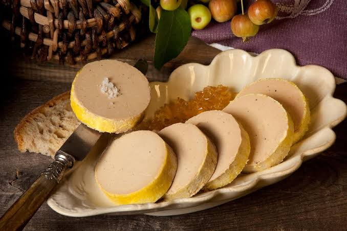

Foie gras
du Quercy


⟹ Produits du Terroir ⟸
Le foie gras du Quercy est l’une des grandes fiertés gastronomiques du nord du Tarn-et-Garonne et du Lot. Produit à partir de canards élevés en plein air puis engraissés au maïs, il se distingue par sa texture fondante, sa couleur ivoire à rosée et sa longueur en bouche.

La pratique de l’engraissement des palmipèdes est très ancienne : les Égyptiens de l’Antiquité avaient déjà observé que les oies sauvages se gavaient naturellement avant leur migration, et reproduisaient ce phénomène. Les Romains engraissaient les oies aux figues, d’où le mot latin ficatum qui a donné le mot « foie ».
Dans le Sud-Ouest, le foie gras prend son essor avec l’arrivée du maïs, rapporté des Amériques et cultivé dans la région à partir du XVIe et surtout du XVIIe siècle. Les fermes du Quercy, de Gascogne et du Périgord en font la base de l’engraissement des oies, puis des canards, dans une économie familiale où rien n’est perdu : la viande est confite, la graisse sert à la cuisine et le foie est réservé aux grandes occasions.
Au XIXe siècle, la cuisine bourgeoise et les grands chefs font du foie gras un mets de prestige, tandis que l’appertisation permet de le conserver et de l’expédier loin de ses terres d’origine. Les marchés au gras, qui se tiennent l’hiver dans les bourgs du Sud-Ouest, deviennent des rendez-vous incontournables où l’on vend canards entiers et foies crus.
Le Quercy est l’un des six territoires historiques reconnus par l’IGP « Canard à foie gras du Sud-Ouest » (Chalosse, Gascogne, Gers, Landes, Périgord, Quercy), obtenue en juin 2000. Pour l’IGP, le Quercy comprend le département du Lot et plusieurs cantons du Tarn-et-Garonne : Montpezat-de-Quercy, Caussade, Négrepelisse, Monclar-de-Quercy, Villebrumier, Caylus et Saint-Antonin-Noble-Val.
Le cahier des charges impose un élevage, un gavage, un abattage et une transformation dans le Sud-Ouest, un engraissement progressif au maïs du Sud-Ouest et une durée d’élevage minimale. Le foie gras peut en outre bénéficier d’un Label Rouge, qui garantit une qualité supérieure, avec une durée d’élevage plus longue et des foies sélectionnés.
La réglementation française encadre strictement les dénominations : le « foie gras entier » est composé d’un ou plusieurs lobes entiers, le « foie gras » de morceaux de lobes agglomérés, et le « bloc de foie gras » de foie gras émulsionné. Le foie gras peut être vendu cru, mi-cuit ou en conserve.
Un beau foie gras cru se reconnaît à sa couleur uniforme, ivoire à légèrement rosée, à sa souplesse sous le doigt et à l’absence de taches.
Conseil des producteurs fermiers du QuercyLe foie gras du Quercy s’accorde naturellement avec les autres trésors du territoire : la truffe noire du Quercy, le Chasselas de Moissac poêlé, les figues, les pruneaux ou le pain d’épices. Il reste le mets incontournable des repas de fin d’année et des grandes tablées familiales.
La filière, durement touchée ces dernières années par les épisodes d’influenza aviaire, a dû adapter ses pratiques d’élevage. Elle reste un pilier de l’économie rurale du Quercy, où de nombreux producteurs fermiers élèvent, gavent et transforment eux-mêmes leurs canards.
Pour le foie gras poêlé, saisissez des escalopes de 1,5 cm à feu vif dans une poêle sans matière grasse, 1 minute par face, et déglacez avec un trait de vinaigre de vin ou de jus de chasselas.
Le conseil de la ficheFoie gras cru : vendu sous vide ou sur les marchés au gras, à cuisiner soi-même : terrine, torchon ou poêlé.
Foie gras mi-cuit : cuit à basse température, conservé au frais quelques semaines ; texture fondante et goût délicat.
Foie gras entier en conserve : stérilisé, il se garde plusieurs années et se bonifie avec le temps, comme un vin.
Foie gras poêlé : escalopes saisies à vif, servies chaudes avec raisins, figues ou pommes caramélisées.
Foie gras truffé : enrichi de truffe noire du Quercy, la version de fête la plus prestigieuse.
Le foie gras du Quercy se trouve toute l’année chez les producteurs fermiers, mais les marchés d’hiver et de fin d’année restent les rendez-vous privilégiés.
Caussade et Montpezat-de-Quercy cantons de l’IGP au cœur du Quercy tarn-et-garonnais, avec de nombreux éleveurs-transformateurs en vente directe.
Caylus et Saint-Antonin-Noble-Val aux portes des gorges de l’Aveyron, fermes et conserveries artisanales du Quercy.
Montauban marchés et épiceries fines de la ville, particulièrement fournis avant les fêtes.
Marchés au gras d’hiver de novembre à mars, dans les bourgs du Quercy et du Lot voisin, pour acheter canards gras et foies crus.
Fermes « Bienvenue à la ferme » visites d’élevages, dégustations et boutiques à la ferme dans tout le nord du département.